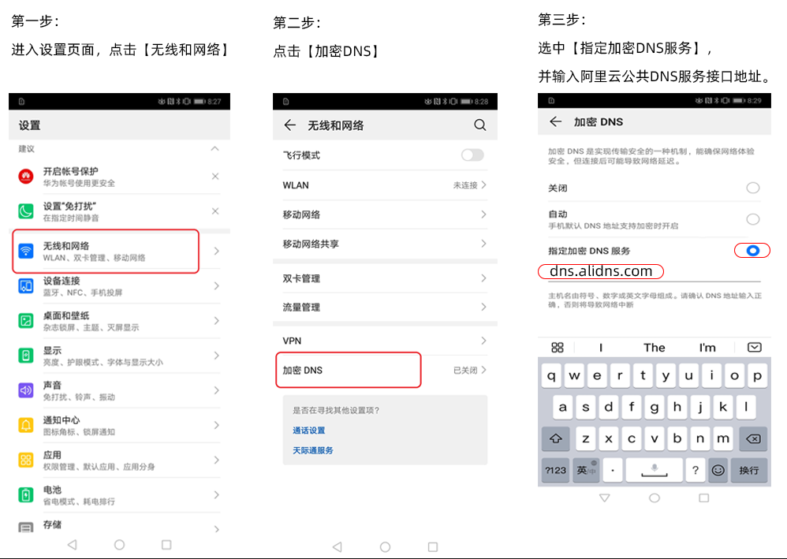
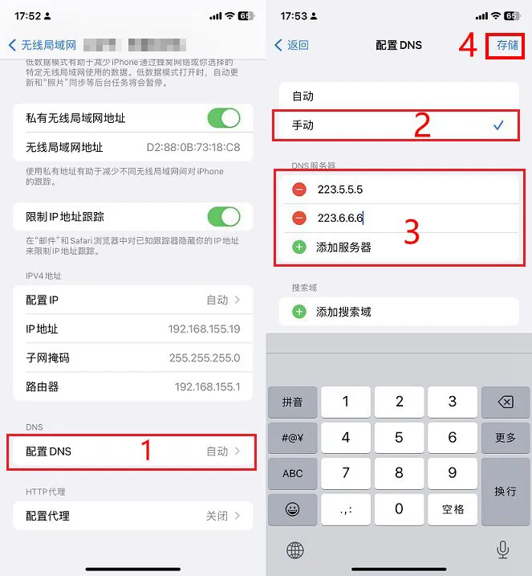
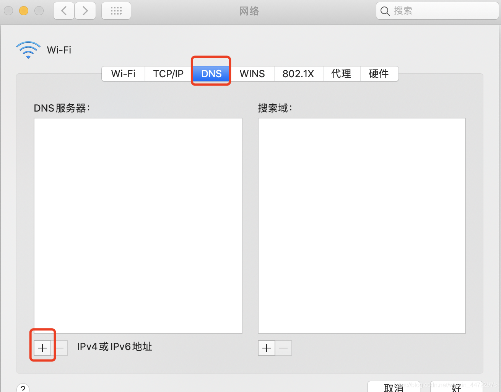
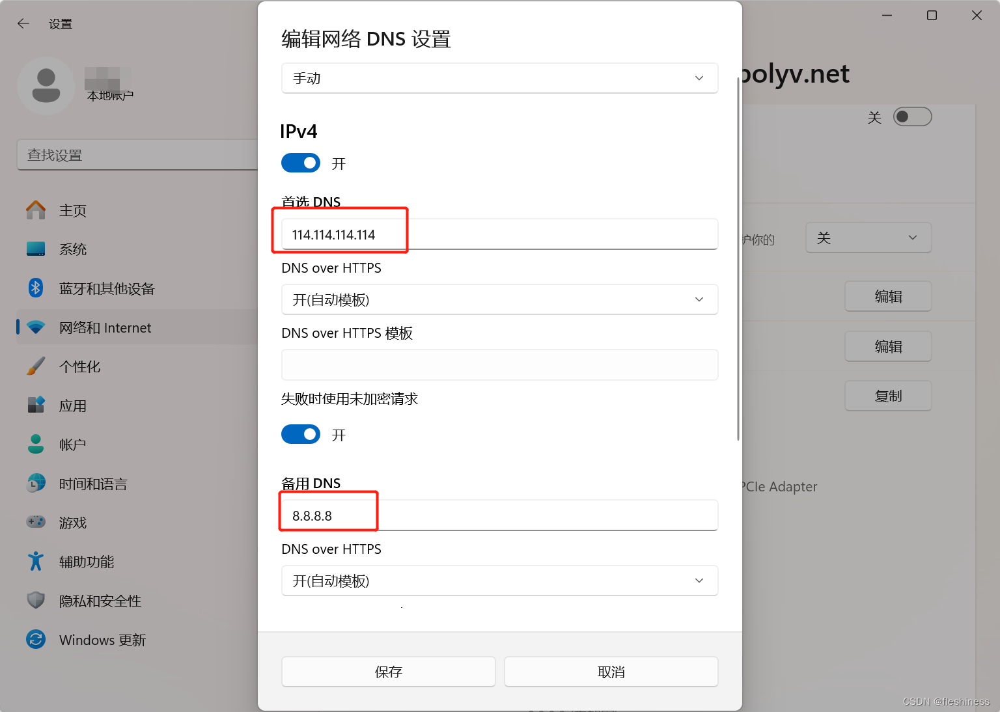
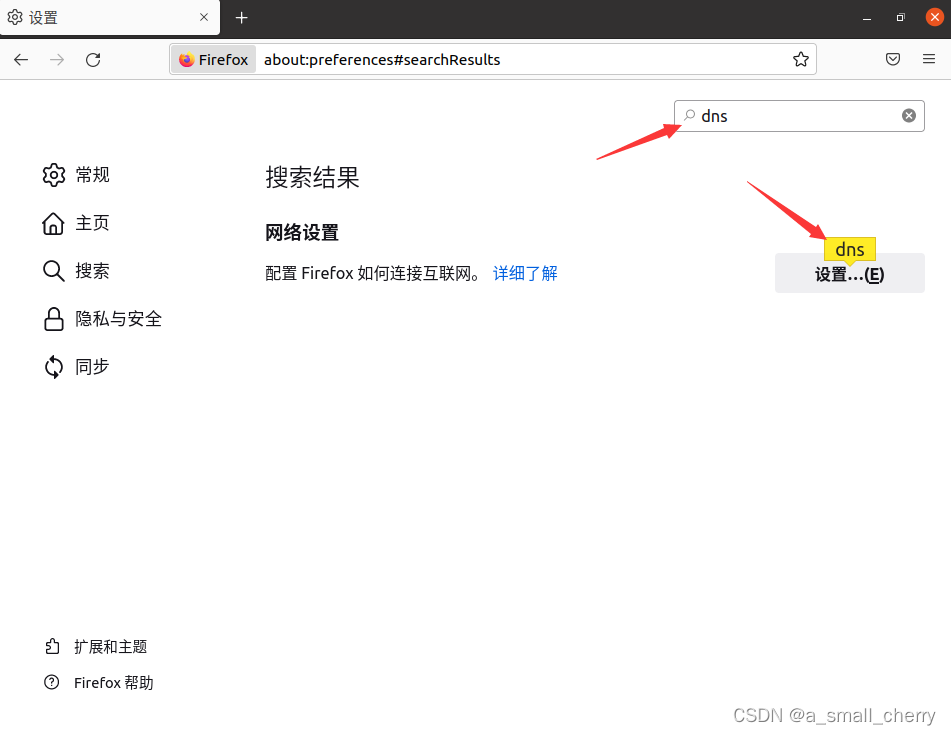
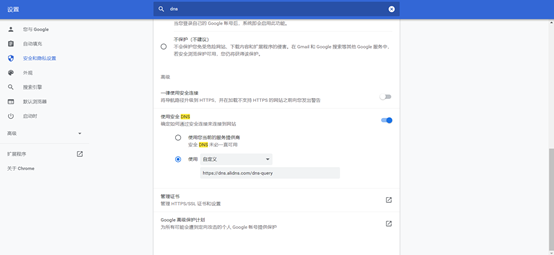

部分地区移动网络下无法访问部分网站，往往是运营商 DNS 解析不稳定所致。切换到公共 DNS 即可解决，以下是地址大全与各设备配置方法。
同样的网站，电信、联通用户能正常打开，移动用户却打不开——很大几率是移动运营商的 DNS 服务器不及联通、电信稳定，导致域名解析失败。尝试改用公共 DNS 通常可以解决；如仍无法访问，可联系运营商官方客服。
| 服务商 | IPv4 地址 | IPv6 地址 | 加密 DNS（DoH） | GitHub 解析 |
|---|---|---|---|---|
| 阿里 AliDNS国内推荐 · 无劫持 | 223.5.5.5223.6.6.6 |
2400:3200::12400:3200:baba::1 |
https://dns.alidns.com/dns-query |
… |
| 腾讯 DNSPod国内 | 119.29.29.29182.254.116.116 |
2402:4e00::2402:4e00:1:: |
https://doh.pub/dns-query |
… |
| 百度 Baidu国内 | 180.76.76.76 |
2400:da00::6666 |
— | — |
| 114DNS国内老牌 · 纯净 | 114.114.114.114114.114.115.115 |
— | — | — |
| Google国际 | 8.8.8.88.8.4.4 |
2001:4860:4860::88882001:4860:4860::8844 |
https://dns.google/dns-query |
… |
| Cloudflare国际隐私优先 | 1.1.1.11.0.0.1 |
2606:4700:4700::11112606:4700:4700::1001 |
https://cloudflare-dns.com/dns-query |
… |
github.com 的往返耗时，数字越小越适合访问 GitHub；百度、114 无公开 DoH 接口，浏览器无法直接测速。点击"重测"可随时刷新。dns.alidns.com，保存即可。
223.5.5.5 与 223.6.6.6。
+ 按钮添加 DNS 服务器。223.5.5.5、223.6.6.6，点击「好」→「应用」保存。
nslookup，若返回 server 为阿里公共 DNS 即配置成功。Win + I 打开设置，进入 「网络和 Internet」。223.5.5.5，备用 DNS 填 223.6.6.6，点击「保存」。
https://dns.alidns.com/dns-query。DNS，在【网络设置】右侧点击 【设置…】。https://dns.alidns.com/dns-query，点击确定。
DNS，点击「安全」进入。https://dns.alidns.com/dns-query。